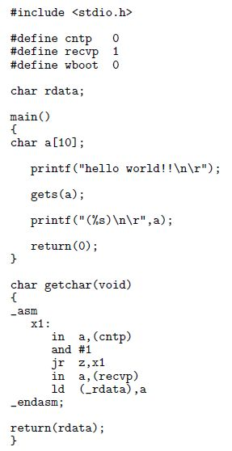
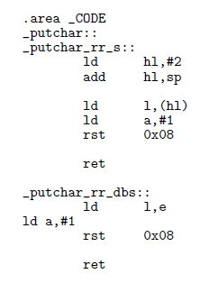
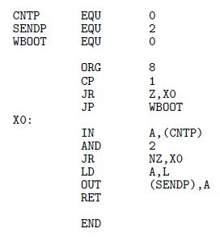
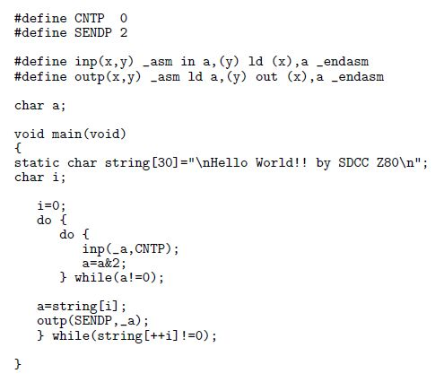
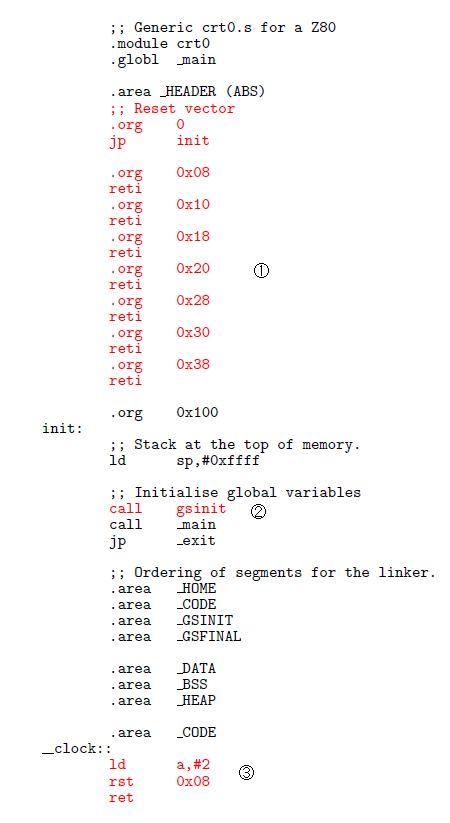
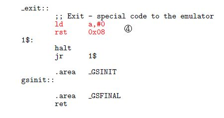
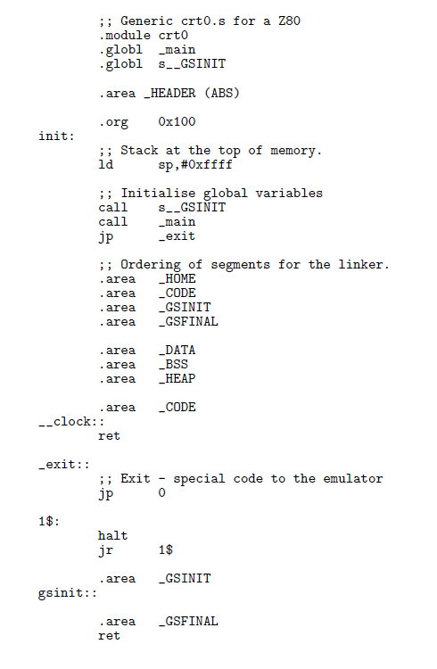
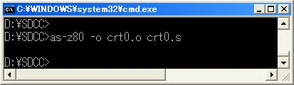
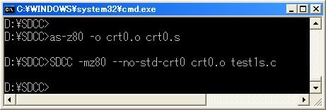
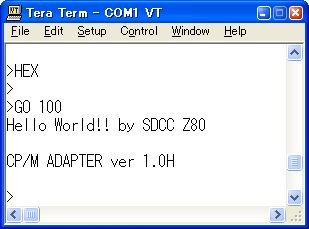

|
SDCC Z80 |
SDCCの出力するZ80コードをメモリモニタとCP/Mアダプタの上で動かすプログラミング
について考察します。
SDCCは独立して実行できるプログラムを出力するのでスタートアップルーチンを持って
いますが、これを含めるとダウンロード時にCP/Mアダプタの領域を書き換えるので
SDCC -mz80 --no-std-crt0 TEST.C
のようにスタートアップルーチンを使わないコンパイルをします。
コード領域とデータ領域を省略した場合はそれぞれ
200H
番地と
8000H
番地に設定されていました。
|
標準入出力 |
| 図1:コンソール入出力 | |
|
 |
SDCCは標準入出力文として
printf
と
gets
を備えています。
これらを利用したプログラムを
図1
のように書けます。
標準入出力文の末端にあるI/O操作はこちらで書いて追加する必要があります。
printf
は最終的に
図2
の
putchar
を呼び出していますがここで機能番号をレジスタ
A
に送信データをレジスタ
L
に渡して
RST 8H
を実行しています。
ここの内容はスタートアップルーチンにあるのですが
RET
があるだけなので自分の環境に合わせたプログラムがこの位置に必要なことが分かります。
| 図2:putchar.s | |
|
 |
| 図3:CONOUT.ASM | |
|
 |
printf
文が動くためには
図3
のプログラムをメモリに配置します。
レジスタ
A
に機能番号があります、これが
1なら
putchar
から呼ばれている分けです。
機能番号が
0のときはプログラムの終了のとき呼び出されていますのでWBOOTに分岐します。
これを
RET
で戻すとスタートアップルーチン内のプログラムで
HALT
が実行されてCPUが停止します。
gets
文は最終的に
getchar
を呼び出していますが
SDCC
には準備していないようです。
そこで自分の環境に合わせて作ったのが
図1
の下のプログラムです。
これで
200H
番地から実行したようすが
図4
です。
| 図4:コンソール実行 | |
> >GO 200 hello world!! abcdefg (abcdefg) CP/M ADAPTER ver 1.0a |
|
IO直接操作 |
CP/Mのシステムコールを使わないプログラムです。 このプログラムは最初は スタートアップルーチン をリンクせずに実行させてみたのですが動きませんでした、 理由は文字列が無かったからです。 文字列は スタートアップルーチン から呼び出されるプログラムによって所定の位置に文字列が書き込まれる仕組みになっていました。
| 図5:IO直接操作 | |
|
 |
初期値を持つ変数宣言は
スタートアップルーチン
が不可欠のようなので付属の
crt0.s
を見てみます。
| 図6:crt0.s | |
|
  |
変更後の crt0.s です。 文字列を初期化するプログラムの位置はマップファイルを見ると s__GSINIT のようです。
| 図7:修正crt0.s | |
|
 |
| 図8:修正crt0.sのアセンブル | |
|
 |
| 図9:crt0.oをリンクするコンパイル | |
|
 |
| 図10:実行 | |
|
 |